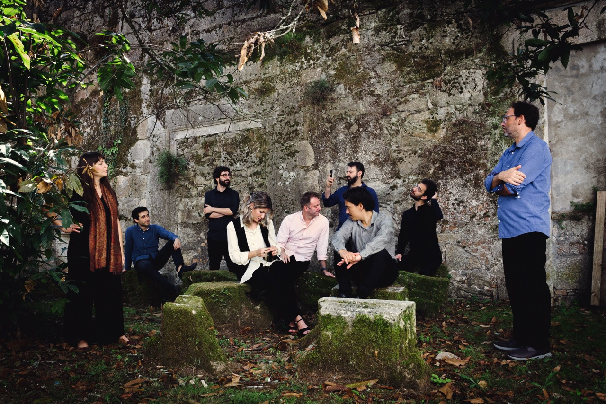
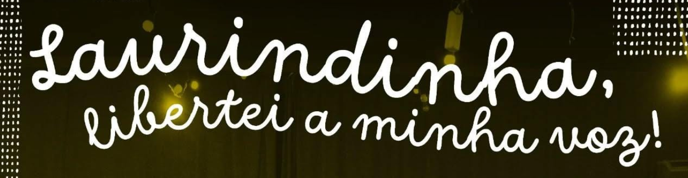

close

ARTE MINIMA
Executive producer
2024 - today
Early Music Ensemble, led by Pedro Sousa Silva.
ANDAVIRA - Cooperativa Artística Multidisciplinar, CRL
1st Board Member
2026 - today
Porto-based artistic cooperative dedicated to creating a sustainable platform for artistic production.

LAURINDINHA, LIBERTEI A MINHA VOZ!
Associate artistic director
2024 - 2025
A M.I.N.H.A. project, in partnership with RIJu, that brings traditional chants to new ways of collective musical creation and experimentation. Brought together by Inês Luzio, Leonardo Patrício and Bernardo Chatillon.